Rare events in SIR dynamics
with heterogenous spreading rates
Johannes Zierenberg


Mathematical modelling of epidemic outbreaks
 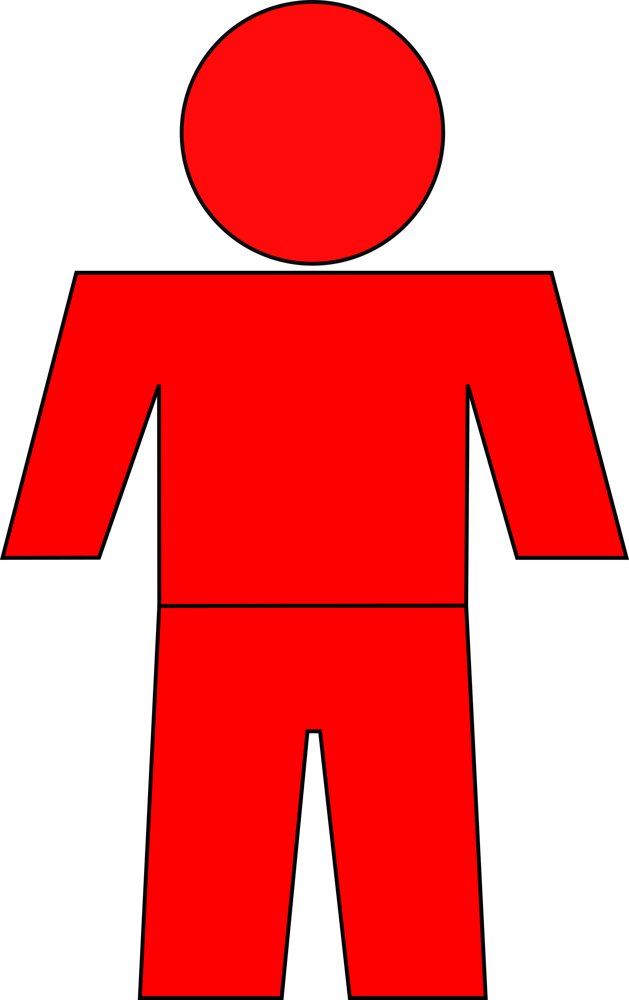
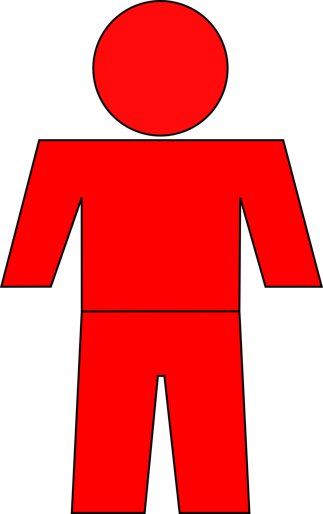
Susceptible
Infected
Recovered
$\lambda$
spreading rate
$\mu$
recovery rate
The mean-field evolution of the outbreak can be described by the differential equations
$$
\frac{dS}{dt} = -\lambda\frac{S}{N} I\phantom{+\mu Itt}\\
\frac{dI}{dt} = \left(\lambda\frac{S}{N} -\mu \right)I\\
$$
For $S\approx N$ the dynamics is controlled by the effective growth rate $\lambda^\ast=\lambda-\mu$
Kermack et al., Proc. R. Soc. Lond. (1927).
Dehning et al. Science (2020).
Are we all the same?
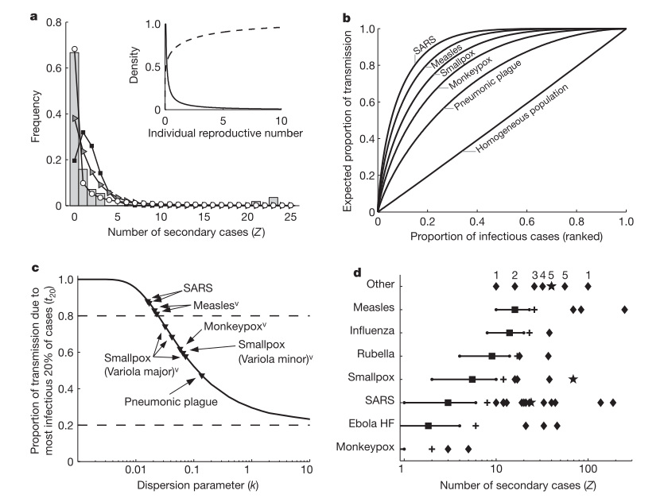 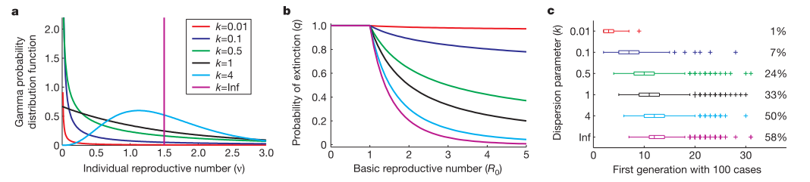 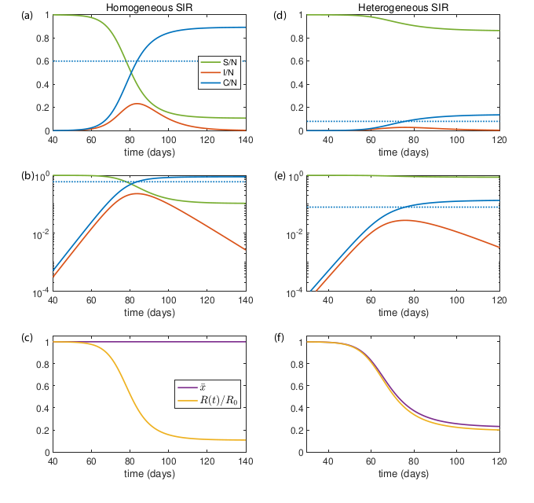
Heterogeneous susceptibility factor
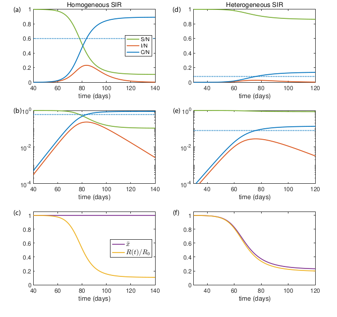
Heterogeneous susceptibility factor(Gamma distributed)
LLoyed-Smith et al., Nature (2005).
Bettihn et al., medRxiv (2020).
Neipel et al., arXiv (2020).
Effect of heterogeneous spreading rates
We stay in the well-mixed scenario but now each infected has
$\lambda_i\sim P(\lambda)$, i.e.,
$$
\text{random}\, S \to I \quad\text{with rate}\quad \sum_{i=0}^{I}\lambda_i \\
\text{random}\, I \to R \quad\text{with rate}\quad \mu I\ \\
$$
Naively, we could write
$$
\frac{dI}{dt} = -\mu I + \sum_{i=1}^I \lambda_i \frac{S}{N} = -\mu I + \bar{\lambda}I\frac{S}{N}
$$
Of course, this is not correct because $I$ is a discrete variable.
Instead, we now consider the stochastic evolution of $I$ by the master equation $$ \frac{dP_I(t)}{dt} = \sum_{i=0}^{I-1}\lambda_i P_{I-1}(t) + \mu(I+t)P_{I+1}(t) - \left(\sum_{i=0}^I\lambda_i + \mu\right)P_I(t) $$
Instead, we now consider the stochastic evolution of $I$ by the master equation $$ \frac{dP_I(t)}{dt} = \sum_{i=0}^{I-1}\lambda_i P_{I-1}(t) + \mu(I+t)P_{I+1}(t) - \left(\sum_{i=0}^I\lambda_i + \mu\right)P_I(t) $$
Kinetic Monte Carlo algorithm
Our goal is to evaluate the Master equation
$$
\frac{dP_I(t)}{dt} = \sum_{i=0}^{I-1}\lambda_i P_{I-1}(t) + \mu(I+t)P_{I+1}(t) - \left(\sum_{i=0}^I\lambda_i + \mu\right)P_I(t)
$$
We achieve this by generating stochastic trajectories from a given
initial condition $\{S_0,I_0,R_0\}$ and transition rates $r_{S\to
I}$ and $r_{I\to R}$ by
- draw exponentially distributed time step $\Delta t \sim \text{Exponential}(r_{S\to I} + r_{I\to R})$
- draw random update type proportional to the transition rates
- if $S\to I$ draw new random $\lambda_i\sim P(\lambda_i)$ and add to list
- if $I\to R$ select random $\lambda_i$ from list and remove
- go back to 1.
Dependence on dispersion parameter $k$
$$
\lambda_i \sim \Gamma\left(k, \lambda/k\right) \qquad\text{with}\qquad \lambda=\mu=1/8
$$
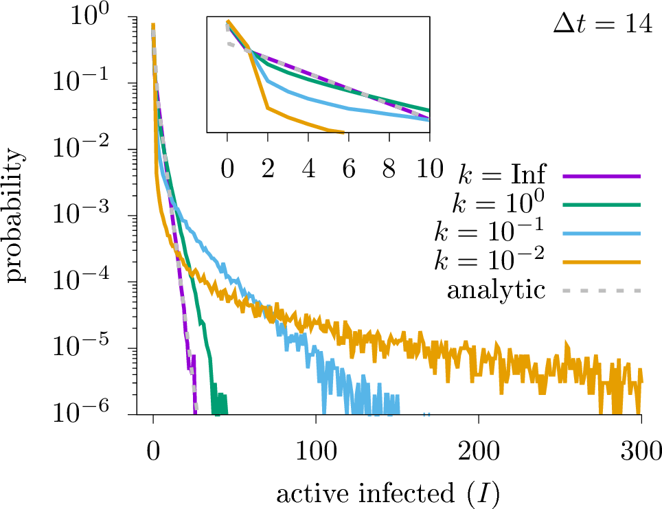
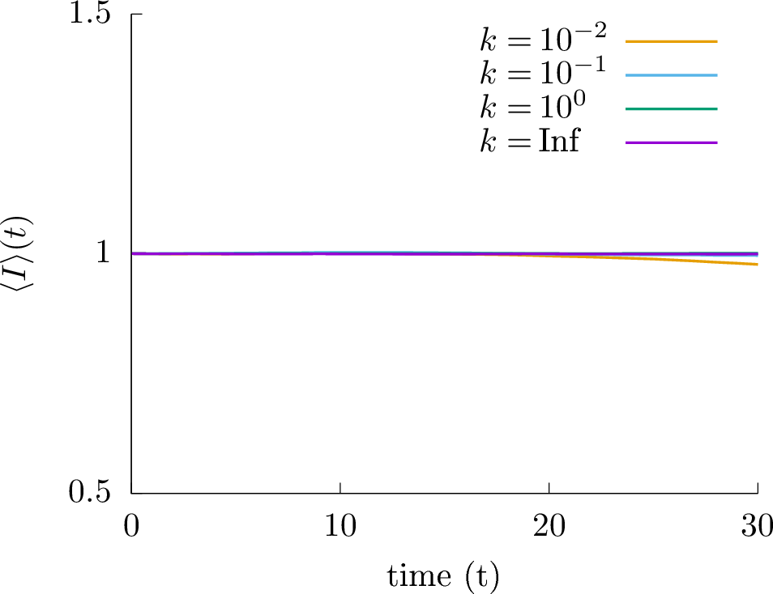
Dependence on initial condition
We are still well-mixed! So we can approximate multiple initial infected as independent processes.
Then, $I_t = \sum_{j=1}^{I_0} I_t^j$ is a sum of random variables, we have evaluated so far $P^1(I_t)$, and we are interested in $P(I_t|I_0)$.
It turns out that the distribution of a sum of iid. random
variables is given by an n-fold convolution $P(I_t|I_0) = P^1\ast
....\ast P^1$, which is to be solved iteratively
$$
P(I_t|I_0) = \sum_{i=0}^{I_0} P(i|I_0-1) P^1(I_t-i).
$$
Instead, however, we can solve the n-fold convolution conveniently in Fourier space
$$
P(I_t|I_0) = \mathcal{F}^{-1}\left\{\mathcal{F}\left\{P^1\right\}^{I_0}\right\}.
$$
Assuming we can neglect interactions (also from a vanishing $S$
pool), we can thus approximate any initial condition once we have $P^1(I_t) = P(I_t|I_0=1)$ via
$$
P(I_t|I_0) = \mathcal{F}^{-1}\left\{\mathcal{F}\left\{P^1\right\}^{I_0}\right\}.
$$
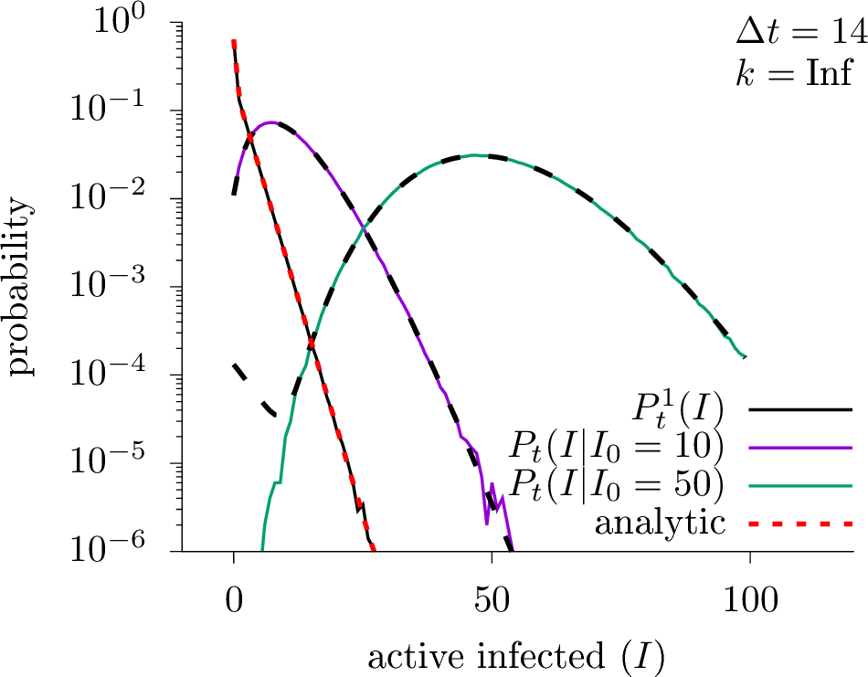
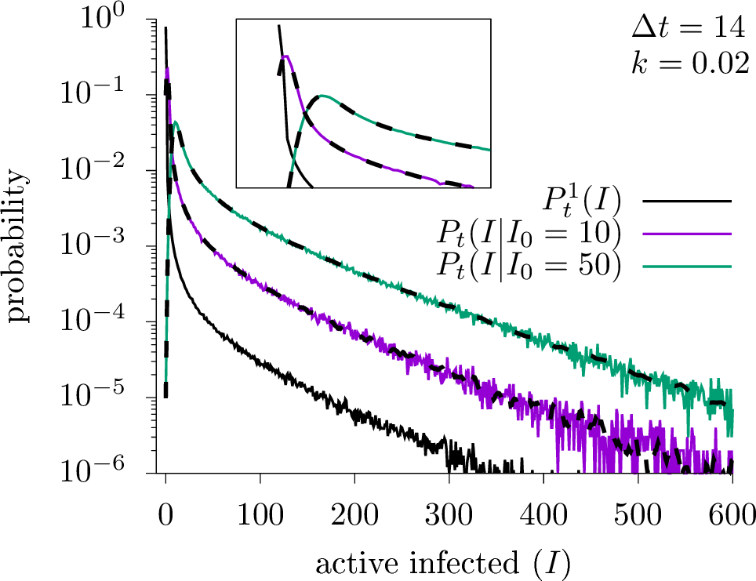
Probability of extreme events
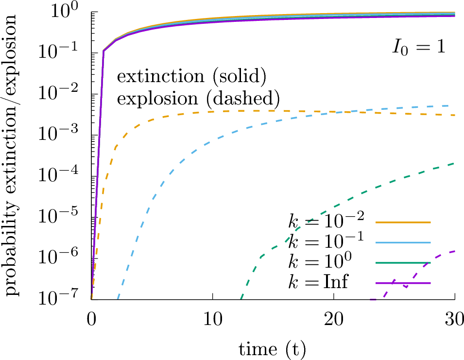
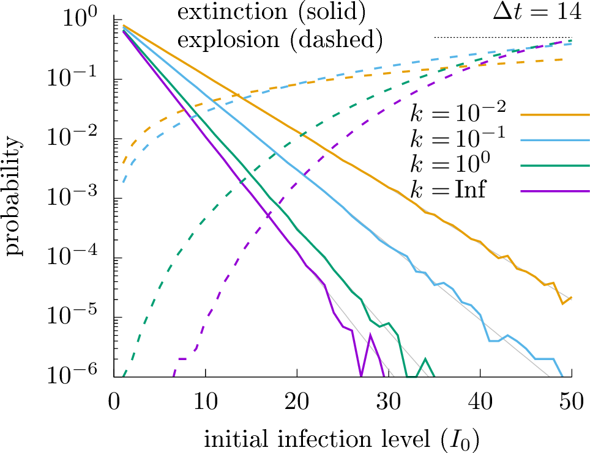